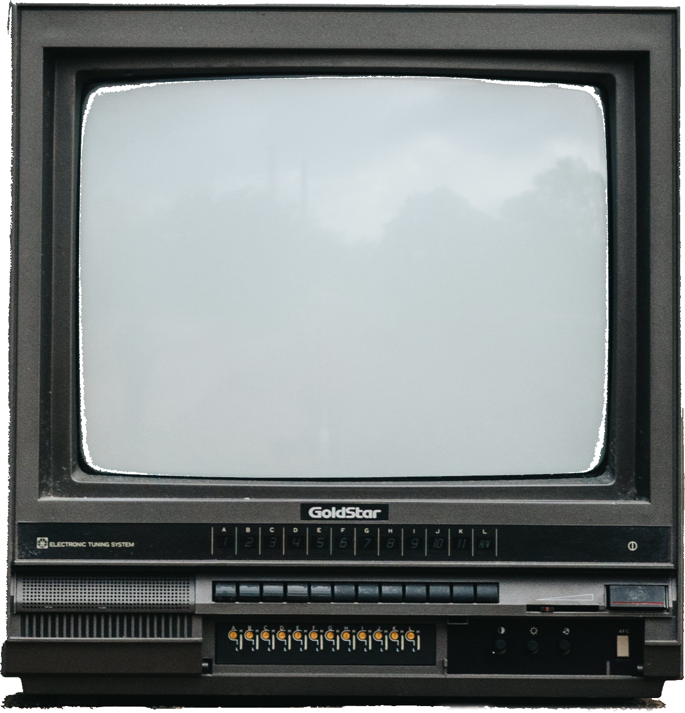

clip
A brief history of platformer games.
[Click or Enter to start] The sidescrolling platformer is a staple video game format. It involves a side-view camera angle and mechanics based mostly on a player running and jumping on and around obstacles. Several genre-defining instances may immediately come to mind, such as Sonic the Hedgehog, Cuphead and of course, Super Mario Bros, the best-selling sidescrolling platformer of all time. The first member of this category, however, predates Super Mario by 4 years. It was called Jump Bug and it came out in 1981. Players navigated a constantly jumping Volkswagen Beetle, jumping on buildings and clouds to collect money and avoid enemies. They could control horizantal motion and the height of a jump, but jumps themselves were automatic.
Pac-Land is another revolutionary game that predates Super Mario Bros, but only by one year. It saw the famous Pac-Man in a new, more detailed landscape--traveling through town, then mountains and forests on his quest to save lost fairies--all while evading his familiar enemy group of ghosts. Pac-Land set a precedent for one of the most common ways to portray player motion: remaining locked in a certain position on the x-axis. Notice below where the hamburger player is positioned. Some games keep the player centered, while others, like Pac-World, anchored the player leftward to give them a chance to identify oncoming enemies. Press the button to toggle player x-position.
Value:
Motion windows are another strategy for player motion. Notice the white rectangle. If the player attempts to move past it, only then will the background readjust. In this way the player always remains relatively close to the center of the screen but has a less jarring way to get around. These windows can be applied for horizantal motion, vertical motion or both. While this method requires a couple more steps to calculate motion, it is actually the one that Jump Bug used, making it perhaps the best established overall strategy.
The most famous sidescrolling platformer came out in 1985. It used a combination of a horizantal window, and vertical snapping. Vertical snapping means the y position of the background would only adjust when the player is settled on a new platform with a different elevation than the last. Try jumping on the block in the air. Notice how only when you've landed does the background move up.
Programming a game in the time of Super Mario World was especially difficult. It was far before such game development frameworks as Unity or UnrealEngine were invented. C++ was barely around and C# wouldn't be released until 2000. So the first Mario game was written in assembly language for the 6502 microprocessor - a language just above machine code that had merely 50 possible instructions for programmers to use.
Super Mario Bros was stored entirely on 40kb of memory. That's the equivalent to a 115-pixel square Adobe Photoshop doc. The way the game was able to present so many unique scenes using a spritesheet. Every graphic in the game was stored on this one 8kb spritesheet. Backgrounds would just be a couple small images repeated many times and while other sprites could be layered on top, there could be no more than 64 on screen at once. Notice below the two frames used for the idle state and the two frames used for walking state. These all come from the same sheet so just by changing the logic we can switch the animations for walking and idle states.
Fast forward to the 90s with the release of Sonic the Hedgehog, a game that brought display speeds up to 60 frames per second. This enabled much quicker gameplay and enhanced the excitement of the genre. Use the slider below to adjust the frame speed.
While they may not be the mainstay they once were, sidescrolling platformers are far from obsolete. For instance, Cuphead garnered an estimated 575,000 sold copies on Steam--just in its first two weeks on the market. Cuphead is also proof that painstaking development is also still alive and well with its every frame of animation in the game hand drawn on paper.
Want to test your retention? OPEN QUIZ
References